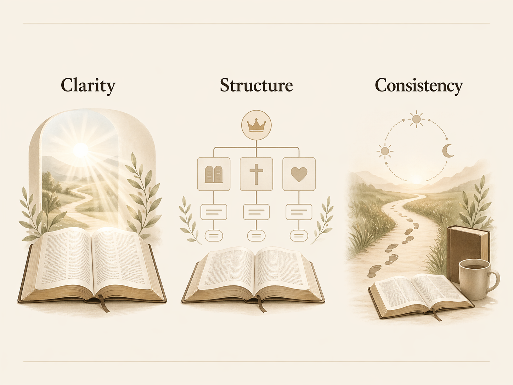
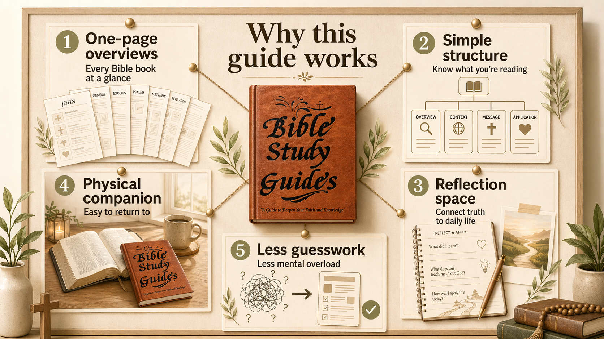

You are reading this for a reason
For many believers, the problem is not lack of faith—it is trying to read a deep, connected book without enough context, guidance, or a simple way to hold the big picture together.
Many Christians blame themselves when reading feels hard. The Bible was written across different times, places, and authors—without a way to see how those pieces connect, it is easy to feel overwhelmed.
When you know who a book was written to, why it was written, and where it fits in the larger story, passages that once felt random start to make more sense.

A 66-page guide gives each book of the Bible a simple, structured page—so you can understand context, notice themes, and reflect without information overload.

Sharon P.
“I find it to be a great asset to learning, understanding, and applying the Word.”
The next step is not always trying harder. Sometimes it is using a resource that helps you read with more context, more clarity, and less overwhelm.